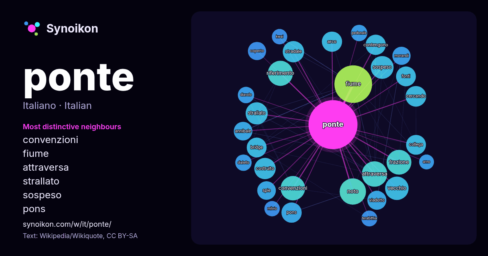

Italiano · elenco delle parole del giorno
ponte
“bridge” · Le parole trovate attorno ad essa in 1755 occorrenze da Wikipedia, Wikiquote.

Vicini più caratteristici
- convenzioni 37×
- fiume 37×
- attraversa 36×
- strallato 32×
- sospeso 31×
- pons 27×
- stradale 25×
- frazione 25×
- bridge 24×
- contengono 24×
- viadotto 23×
- riferimento 23×
- cercando 22×
- spie 22×
- arco 22×
- vecchio 22×
- annibale 21×
- morandi 21×
- noto 20×
- coperto 19×
× = quante volte più spesso che nel testo generale di Wikipedia.
Vicini più frequenti
- fiume 90
- san 59
- noto 44
- attraversa 41
- riferimento 40
- frazione 39
- situato 39
- convenzioni 38
- vecchio 35
- progetto 34
- sospeso 33
- roma 32
- strallato 31
- costruito 29
- stradale 29
- cercando 27
- arco 26
- contengono 26
- pons 26
- bridge 25
Nel contesto
- Disambiguazione – Se stai cercando altri significati, vedi Ponte (disambigua). Un ponte è un'infrastruttura (o opera) tipica dell'ingegneria civile, utilizzata Wikipedia snippets · Ponte
- Wicki Il ponte – film del 1977 diretto da Juan Antonio Bardem Il ponte – film del 2005 diretto da Stefano Missio Il Ponte – mensile italiano Ponte (disambigua) Wikipedia snippets · Il ponte
- titolo. Ajla Del Ponte (1996) – velocista svizzera Amalia Del Ponte (1936-2025) – artista, designer e scultrice italiana Carla Del Ponte (1947) – magistrata Wikipedia snippets · Del Ponte
- cercando altri significati, vedi Ponte Vecchio (disambigua). Il Ponte Vecchio è un ponte storico sul fiume Arno a Firenze. Il ponte collega via Por Santa Maria Wikipedia snippets · Ponte Vecchio
- del ponte è opera dello studio danese di architettura Dissing+Weitling. Il nome della società che gestisce il ponte è "Øresundsbron" (ovvero "Il ponte di Wikipedia snippets · Ponte di Øresund
- le convenzioni di Wikipedia. Il Ponte dorato (in vietnamita: Cầu Vàng, tradotto letteralmente "Ponte d'oro") è un ponte pedonale situato nel resort delle Wikipedia snippets · Ponte dorato
- Il ponte San Michele, noto anche come ponte di Paderno, ponte di Calusco o ponte Röthlisberger, è un ponte ad arco in ferro, a traffico misto ferroviario-stradale Wikipedia snippets · Ponte San Michele
- Se stai cercando l'omonimo album, vedi Gabry Ponte (album). San Marino Song Contest 2025 Gabriele Ponte, detto Gabry (Torino, 20 aprile 1973), è un disc Wikipedia snippets · Gabry Ponte
Altre parole
Precalcolato il 2026-10-09 con le impostazioni predefinite (±5 parole, corpus medio). La mappa interattiva può aggiornarlo con dati in tempo reale.
Interfaccia tradotta automaticamente; correzioni benvenute.